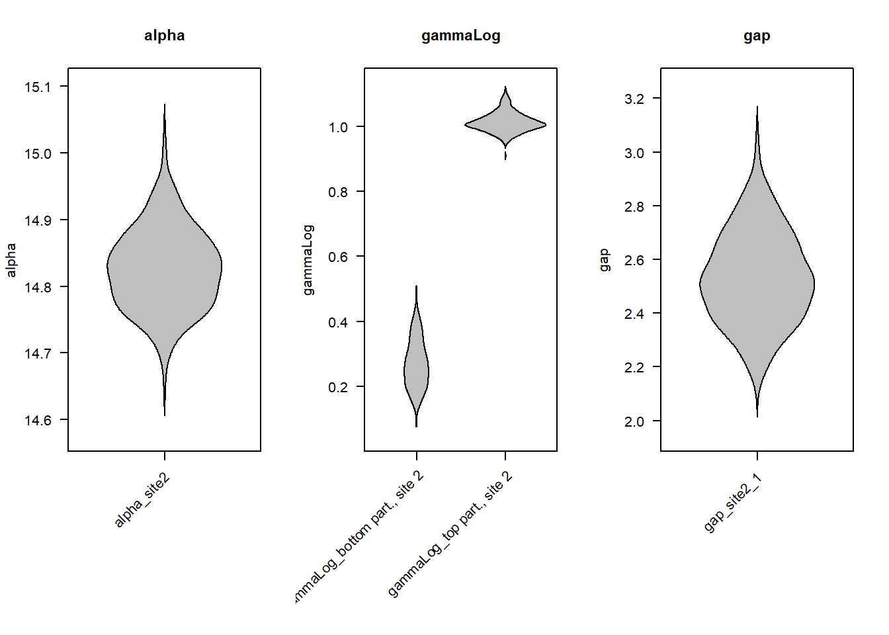

library("StratoBayes")
set.seed(0)Variable sedimentation rates and gaps: partitioning data
StratoBayes is an R package for correlating and dating geological data.
- Installation instructions and documentation: https://stratobayes.github.io/.
- Basic introduction to StratoBayes: StratoBayes vignette.
- Overview of available vignettes: Vignette index.
This guide explains how partitioning your data into segments allows StratoBayes to model changing sedimentation rates. Please send us an email or raise an issue on Github if you encounter any problems with the software or have suggestions on improving this documentation.
We start by loading StratoBayes and set a random seed for reproducibility:
The data
In this example, we use the included dataset signalData4. This data has been simulated with a hiatus (stratigraphic gap) at Site 2, and sedimentation rates differ between the bottom and the top stratigraphic partition (delineated by the hiatus):
Building the partition dataframe
To instruct StratoBayes how the data is segmented, we must construct a partition dataframe. This requires to specify the heights of the upper boundaries (tops) of the partitions.
When specifying a hiatus within a stratigraphic sequence, the same height needs to appear twice – first as a hiatus (indicated by an NA in the partition column), and then as the top of the partition below.
Note: At a minimum, the top height of every site must be recorded in the the partition dataframe.
A partition dataframe needs to have the columns site, height, and partition.
Instead of those names, different column names can be used by providing
siteColumn,zColumnand/orpartitionColumnarguments to theStratDatafunction later on. The former two need to match the column names used in the signal dataframe.
In this example:
- For Site 1, the maximum height value (or top of the sequence) is used to define a single partition for the whole site. As we will use Site 1 as the reference site (heights will be unchanged), additional partitions would not affect the analysis.
- For Site 2, two partitions are specified: one for the part above the hiatus (for which we altered the sedimentation rate earlier) and one for part below.
To define the hiatus: - The gap height is included first with an NA to denote the break in continuity.
- The same height is then specified as the top of the partition below the hiatus.
# Determine the maximum recorded height for each site.
site1Max <- max(signalData4$height[signalData4$site == "site1"])
site2Max <- max(signalData4$height[signalData4$site == "site2"])
hiatus <- 3/2 * pi
site2BottomPartitionTop <- hiatus # hiatus height needs to appear twice
# construct the partition dataframe
partsData4 <- data.frame(
site = c("site1", "site2", "site2", "site2"),
height = c(site1Max, site2Max, hiatus, site2BottomPartitionTop),
partition = c("partition site 1", "top partition, site 2", NA, "bottom partition, site 2"))
# print dataframe
partsData4
## site height partition
## 1 site1 24.948872 partition site 1
## 2 site2 23.541414 top partition, site 2
## 3 site2 4.712389 <NA>
## 4 site2 4.712389 bottom partition, site 2We can now create a StratData object from the signalData0b and the partsData0b objects with StratData():
stratData4 <- StratData(signal = signalData4, parts = partsData4)To visualise the partitions, we can use the show = "partition" option of the plot.StratData() function:
plot(stratData4, show = "partition", ylab = "height (m)")Alternatively, we can visualise the signals colour-coded by partition as in the figure at the beginning of this tutorial:
plot(stratData4, colourBy = "partition", ylab = "height (m)")Model set-up and run
The model-setup is analogous to the example in the How to use ‘StratoBayes’ vignette, with one key modification: we want to allow sedimentation rates to vary between partitions, so we specify sedModel = "partition".
StratModelTemplate(
stratData4,
alignmentScale = "height",
sedModel = "partition",
alphaPosition = "middle",
alpha = "uniform",
gammaLog = "normal"
)
##
## priors <- structure(list(
## "alpha_site2" = UniformPrior(min = , max = ),
## "gammaLog_bottom partition, site 2" = NormalPrior(mean = , sd = ),
## "gammaLog_top partition, site 2" = NormalPrior(mean = , sd = ),
## "gap_site2_1" = ExponentialPrior(rate = )),
## class = c("StratPrior", "list"))
##
## model <- StratModel(stratData = stratData4,
## priors = priors,
## alignmentScale = "height",
## sedModel = "partition",
## alphaPosition = "middle",
## nKnots = 25)
##
## result <- RunStratModel(stratObject = stratData4,
## stratModel = model,
## nRun = 1,
## nIter = 1000)Priors
Instead of a site-specific sedimentation rate prior for Site 2 relative to Site 1, we now specify separate sedimentation rates for the bottom partition and top partition relative to Site 1.
We use the same \(\alpha\) and ln\((\gamma)\) priors as previously, with \(\alpha\) spanning the entirety of Site 1. We use normal prior for the relative sedimentation rates (on the logarithmic scale) of both partitions. The priors are centred at 0, reflecting our belief that the sedimentation rates at Site 1 and both partitions of Site 2 are broadly similar.
We also need to include a prior on the hiatus (“gap”) at Site 2. This prior represents our belief about the number of reference height units (e.g. meters) that correspond to the gap. In the absence of specific knowledge, we suggest using an exponential prior, which places most of the probability mass on values smaller than the height range of the reference site. In this example, we use an exponential prior with a rate parameter of 1/4.
site1Min <- min(signalData4$height[signalData4$site == "site1"])
site1Max <- max(signalData4$height[signalData4$site == "site1"])
stratPrior4 <- structure(list(
"alpha_site2" = UniformPrior(min = site1Min, max = site1Max),
"gammaLog_bottom part., site 2" = NormalPrior(mean = 0, sd = log(2)),
"gammaLog_top part., site 2" = NormalPrior(mean = 0, sd = log(2)),
"gap_site2_1" = ExponentialPrior(rate = 1/4)),
class = c("StratPrior", "list"))Running the model
To run the model, we create the model object using the code suggested earlier by StratModelTemplate() (using 15 knots for a quicker run time) and select the desired number of iterations and runs.
stratModel4 <- StratModel(stratData = stratData4,
priors = stratPrior4,
alignmentScale = "height",
sedModel = "partition",
alphaPosition = "middle",
nKnots = 15,
sigmaFixed = T)
stratPosterior4 <- RunStratModel(stratObject = stratData4,
stratModel = stratModel4,
nRun = 3,
nIter = 1000,
nThin = 25,
runParallel = TRUE)Results
We can see that the model run found an alignment solution that applies different sedimentation rates to the bottom and top partition of Site 2. It also identified that there is a gap of a few height units between the two partitions:
plot(stratPosterior4, alignment = 1, colourBy = "partition", ylab = "reference height (m)")
To get summary statistics of the model parameters, we can use the summary() function. For brevity, we just print a subset of the summary:
summary(stratPosterior4)[[c("alignment1", "summary")]]
## mean sd 2.5% 25%
## alpha_site2 14.8263522 0.06139504 14.7175337 14.7809081
## gammaLog_bottom part., site 2 0.2696266 0.07323268 0.1551746 0.2107582
## gammaLog_top part., site 2 1.0126299 0.02951703 0.9623790 0.9935897
## gap_site2_1 2.5341587 0.17165284 2.2223818 2.4066706
## lambda_value 1.2946342 0.46623487 0.5564450 0.9727650
## log prior -300.9276907 9.32441124 -319.2419994 -308.0937169
## log likelihood 98.9529826 9.41845332 78.8659504 92.6928984
## log posterior -201.9747081 3.95833759 -210.1759572 -204.3763034
## 50% 75% 97.5% ess
## alpha_site2 14.8252023 14.8658659 14.952313 600.0000
## gammaLog_bottom part., site 2 0.2611951 0.3233734 0.414835 472.4900
## gammaLog_top part., site 2 1.0084797 1.0285063 1.081041 619.7227
## gap_site2_1 2.5217714 2.6538842 2.879252 600.0000
## lambda_value 1.2594937 1.5406157 2.374569 600.0000
## log prior -301.4475212 -294.7852737 -283.725293 508.3504
## log likelihood 100.0321460 105.8621007 115.260394 600.0000
## log posterior -201.6305543 -199.2044765 -195.120761 600.0000The summary shows median ("50%") log sedimentation rates ln\((\gamma)\) of NA for the bottom and NA for the top partition of Site 2. These translate to a sedimentation rate (\(\gamma\)) of the bottom partition of NA relative to Site 1, and a relative sedimentation rate of NA for the top partition. The hiatus is estimated as 2.52 m on the reference scale.
For a visual summary of the posterior probability densities of parameters, we might use the BeanPlot() function:
BeanPlot(stratPosterior4, parameters = 1:4)
Each “bean” represents the posterior probability density of a model parameter. For example, the plot on the right shows that the posterior estimate of the hiatus duration (gap) ranges from \(\approx\) 2 to 3.2 Myr, with most probability density in the interval from \(\approx\) 2.2 to 2.8 Myr.
Summary
Partitioning data allows StratoBayes to model changes in sedimentation rates and stratigraphic gaps. Most real-world data sets will feature substantial variability in sedimentation rates, so allowing for sedimentation rate changes e.g. at prominent lithological transitions can lead to better alignments. On the other hand, adding partitions adds more unknown model parameters and increases the time for the model run to converge on a solution.
Next steps
- Tie points can improve correlations where available
- Age scale correlation and age modelling allows for dating sections using absolute age constraints